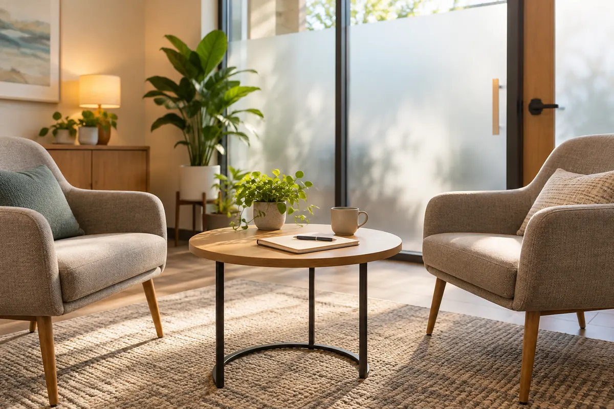
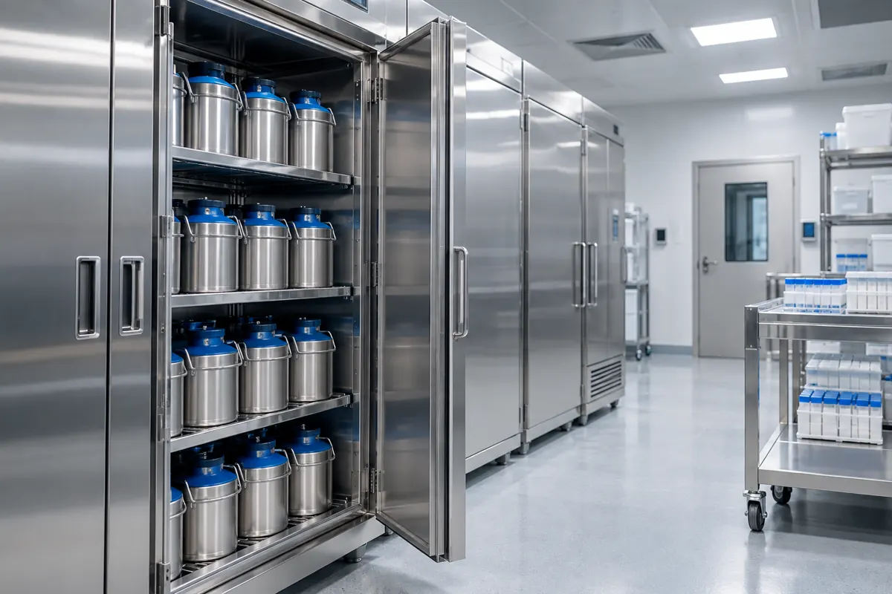
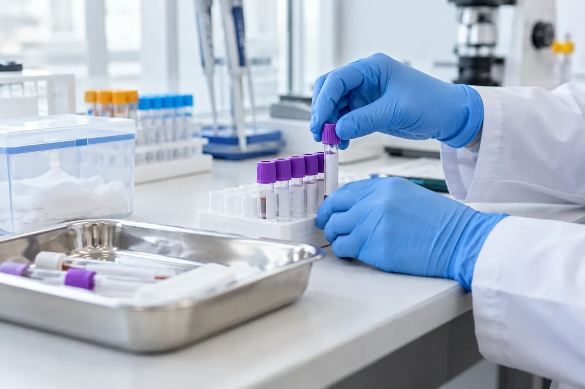

현재 확인
우선순위에서 선택지를 비교할 때의 관점을 살피며 상담은 정해진 답을 고르는 시간이 아니라 본인에게 필요한 정보를 확인하고 다음 순서를 함께 조율하는 과정입니다.
우선순위 기록으로 선택지를 비교할 때의 관점에 관해 현재 상황과 기대하는 변화를 함께 정리합니다.
우선순위에서 선택지를 비교할 때의 관점을 살피며 상담은 정해진 답을 고르는 시간이 아니라 본인에게 필요한 정보를 확인하고 다음 순서를 함께 조율하는 과정입니다.
우선순위에 선택지를 비교할 때의 관점에 필요한 질문으로 설명에서 이해되지 않은 용어는 그대로 넘기지 않고 쉬운 말로 다시 확인해 이후의 판단이 본인의 언어로 남도록 합니다.
우선순위 뒤에 선택지를 비교할 때의 관점을 정리한 뒤 질문이 생기면 메모를 업데이트해 두었다가 정해진 채널로 확인하고, 급하게 판단해야 한다는 부담은 내려놓아도 됩니다.
연구 결과를 살펴볼 때는 연구 대상과 방법, 결과 지표와 한계를 확인하고 실제 진료에 적용되는지는 별도로 문의하세요.
우선순위에 남은 질문은 선택지를 비교할 때의 관점에 맞춰 메모해 두었다가 본인의 생활과 상담에서 확인할 내용을 준비해 주세요.
온라인 상담 시작연구의 질문과 대상, 관찰한 기간을 구분해 읽습니다. 특정 결과가 모든 사람에게 적용된다고 단정하지 않습니다.
새로운 방법을 이해할 때는 확인된 범위와 아직 살펴보는 부분을 함께 봅니다. 모르는 용어는 상담에서 질문합니다.
연구 소식과 개인의 치료 계획은 서로 다른 문서입니다. 자신의 상태에 맞는 판단은 의료진과 상의합니다.
게시일과 수정일을 확인하고 최신 안내를 우선합니다. 이전 내용과 달라진 부분은 메모해 두면 좋습니다.
관심 있는 연구 주제와 현재 생활 기록을 연결해 다음 상담에서 확인할 질문을 준비합니다.
우선순위의 메모를 기준으로 현재 생활 리듬과 다음 확인 순서를 상담에서 함께 살펴봅니다.
우선순위에서 상담 안내를 다음 상담의 메모로 이어 갑니다.


